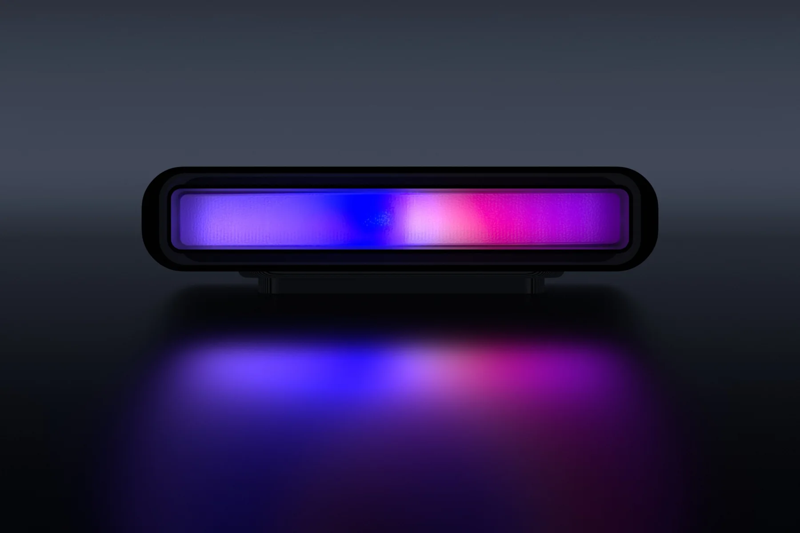

Clauge
An ambient LED gauge that fills up as you burn through your Claude usage limit — so you see the wall coming before you hit it mid-task.

The problem
You find out you have hit a usage limit at exactly the wrong moment: mid-task, mid-thought, with the work half-done. The information exists beforehand, but it lives behind a menu, and a number you have to go and look for is a number you will not look for.
Clauge—Claude + gauge—puts it in your peripheral vision instead. A minimal light bar that fills left to right as the limit fills. No screen, no mascot, no notification. You read it the way you read a fuel gauge, without deciding to.
It runs without your computer
This is the part I care most about. The ESP32-C3 calls the usage API itself over HTTPS and drives the LEDs from firmware. Unplug the PC, close the laptop, go to bed — the bar keeps updating.
The cadence defaults to five minutes, but the device does not hard-code it: it learns the real interval from the extension's pushes and persists it, so the two stay on the same rhythm instead of drifting into redundant fetches. When a push arrives that is younger than the poll interval, the device stands down rather than asking again.
Most comparable builds are a display for a script running on the host: the moment that process quits, the device freezes on its last value and quietly lies to you. A gauge you cannot trust when you are not looking at the computer is not an ambient device, it is a second window.
Getting past Cloudflare
There is a good reason those other builds delegate to the host. claude.ai sits behind Cloudflare, and an ESP32 hitting the API cold gets a Managed Challenge it has no way to solve.
The workaround is a Chrome MV3 extension that acts as a credential courier.
It posts the browser's own sessionKey and cf_clearance to the
device over the LAN, and sends a heartbeat every ten seconds so it can tell when the device
has rebooted and needs them again. Once the device has the cookies it is on its own: it
makes the HTTPS call, parses the response, and drives the LEDs itself.
Both sides call the API, deliberately. The extension's call feeds the popup UI on your computer; the device's call feeds the LEDs and is what lets it survive the computer being switched off. The extension is an optional courier, not a required middleman.
Making 48 LEDs look like one bar
A row of addressable LEDs behind a diffuser reads as a row of addressable LEDs unless you work at it. Three things fix that:
- 16×3 instead of 16×1. Three rows deep gives the diffuser enough light to blend vertically, so the bar has a face rather than a line of dots.
- An OkLab colour ramp. Interpolating in a perceptually uniform space means the gradient has no dead zones or sudden bright bands, which sRGB interpolation always produces somewhere in the middle.
- A sub-pixel leading edge. The fill front is rendered between LEDs by splitting brightness across the boundary pair, so the bar advances smoothly instead of jumping a whole LED at a time. Resolution ends up far finer than the LED pitch.
On top of that there are fourteen live animation modes — a non-Newtonian fluid simulation, a curl-noise flow field, shallow-water waves, plasma, aurora, a lava-lamp metaball field — switchable from the extension popup. They are not the point of the device, but a light bar sitting at 20% all afternoon may as well be interesting.
Firmware you can update without a cable
The device lives on a shelf, not on a bench, so reflashing over USB was never going to be acceptable. The firmware uses the ESP32's dual-slot OTA layout: a new image is written to the inactive slot, verified by SHA-256, and booted once on probation. If it fails to check in, the bootloader rolls back to the previous slot automatically. Releases go out in gray-scale stages rather than to every device at once.
That is more update machinery than a personal project needs. I built it because getting OTA wrong is how a hobby device becomes permanently bricked hardware on a shelf, and I wanted to know how the safe version is actually put together.
Hardware notes
- ESP32-C3 Super Mini, 4 MB flash split into two 1.6 MB application slots so an update always has somewhere safe to land.
- The boot self-test caps its own brightness. All-white at a saved brightness of 255 peaks near 3 A, which brownout-resets a weak USB port. Because the self-test runs on every boot, that is not a glitch you notice once — it is a boot loop with no exit. The white phase is clamped for exactly that reason.
-
A 61-LED variant is supported behind a compile-time
LED_MODULEswitch, with its own serpentine column map — left over from a cost-down pass on the panel.